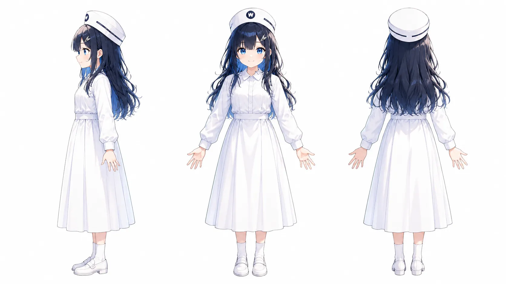
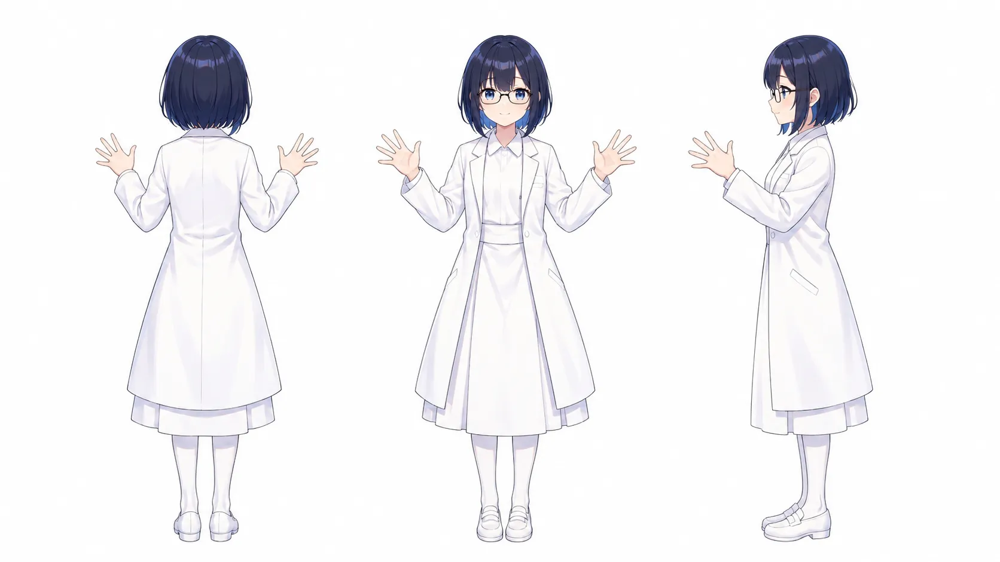

Gallery


Profile
Note: This section mainly explains official visual version 1.
- Full name
- Suzuko Suzuki (鈴木 鈴子, すずき すずこ)
- Nickname
- Suzuko-chan
- Age
- Forever 21
- Date of birth
- July 15, 2004
- Family
- Child of the author, Suzuki
- Occupation
- A young nurse working at the fictional White Wing Hospital (White Wings)
- Qualifications
- Holds a nursing qualification
- Personality and features
-
Innocent personality for her age
Known for her cute smile
The W on her cap is the initial of White Wing Hospital (White Wings) - Clothing
-
Nurse-like and doctor-like clothing in a white color scheme
- Hairstyle and hair color
-
Version 1: longer hair
Version 2: shorter hair
Navy blue, with some blue mesh or highlights - Cap
- A white hat resembling a nurse's cap
- Theme color
- White
- Design approach
- This is how it turned out while I was doing it casually
About Suzuko-chan
Suzuko-chan's exact birthday cannot be determined, but she was born sometime in July 2025, probably around July 15. Based on that, her in-universe date of birth was set as July 15, 2004.
Suzuko-chan's main occupation is nursing, but she is also treated as a multi-talented entertainer.
I think the AI probably generated her as a sailor rather than a nurse, and the young-nurse setting happened by chance; it was not because I have a particular fondness for nurses.
Suzuko-chan was born through the AI image-generation service Akuma.ai. Akuma.ai became Anirole and was later renamed Chacha.
I only had the casual hope of creating a cute character, but I fell in love at first sight when I saw the Suzuko-chan generated by chance.
I was conscious of using blue as the main color, but I did not intentionally generate a nurse-like character.
An AI-generated character I created myself is a cute and beloved presence, almost like my own child. Why not try creating a highly original character using AI as well?
You are sure to grow attached. I hope you will enjoy the process of cherishing and nurturing that character.
Even if it never becomes profitable, the character may remain in the digital world after I leave this world. I think it will remain as a testament to my life, just like real children.
Updates
- Added an English version and Japanese–English language switching
- Three-view drawing update and minor revisions
- Site launch
Guidelines
These guidelines set out the rules for using and creating derivative works based on the original character "Suzuko-chan," created by Suzuki (hereafter, the author). Please read them before use so that you can enjoy the character "Suzuko-chan" and her world while taking good care of them.
Official website
Suzuko-chan Official Site
This site may be linked freely. Sharing and quoting it are welcome.
1. Basic policy
"Suzuko-chan" is a character being developed while reflecting the author's thoughts and philosophy.
As long as you follow these guidelines, personal creative activities within the scope of hobbies, including illustrations, manga, novels, videos, and AI-generated works, are welcome.
2. Permitted uses (OK)
-
Creation and publication of all-ages fan art
The production method does not matter, including hand-drawing, 3DCG, and generative AI.
Posting to social media such as Instagram and note, and to creative social platforms. -
Adaptation of the setting
You may freely explore the character's appeal through forms such as parallel-world settings ("What if Suzuko-chan were ...?"). -
Use in AI generation
Personal experiments and use, such as i2i (Image to Image), using images of Suzuko-chan.
Creation and use of additional training models such as LoRA on a personal device. Distribution is prohibited; see Prohibited uses for details.
3. Prohibited uses (NG)
The following activities are strictly prohibited.
-
Redistributing images
It is prohibited to redistribute or repost, in their original form, images created and published by the author. -
Publication, sharing, or distribution of training models such as LoRA
Publication, sharing, distribution, or sale of additional training models or LoRA and similar models created to make Suzuko-chan easier to reproduce is prohibited.
You may create and use them on your personal device, but do not share them in a form that allows third parties to use them. -
Age-restricted expressions (R-18 / R-18G)
Creating or publishing works containing sexual expressions (R-18) or violent and grotesque expressions (R-18G) is strictly prohibited.
Please create within a range that does not undermine the nurse motif or the character's wholesome image. -
Unauthorized commercial use
Use involving the exchange of money, including merchandise sales, data distribution under a paid plan, and activities primarily intended to monetize, is prohibited. -
Claiming authorship
Claiming that you devised Suzuko-chan's design or basic setting when you did not. -
Use for particular ideologies or beliefs
Use for political or religious activities, or to assert a particular ideology.
Use to attack, discriminate against, or defame others. -
Impersonation
Behaving in a way that could make others mistake you for the official creator, Suzuki.
4. Attribution
-
Indicating that it is unofficial
Please help indicate, to the extent that viewers can understand, that a fan work is unofficial so that they do not mistake it for an official work. -
Credit (optional)
Credit at the time of publication is optional.
Example: Character: Suzuko-chan (by Suzuki)
5. Disclaimer
The author accepts no responsibility for any trouble or damage arising between users from using this character. The content of these guidelines may change without notice. Always check the latest information.
Official links
note For those who want to learn about the author
https://note.com/stocktrading0_ai/n/n6883256131d2?app_launch=false
X (formerly Twitter)
Author, Suzuki:
https://x.com/stocktrading0
Suzuko-chan:
https://x.com/suzuko_ai_